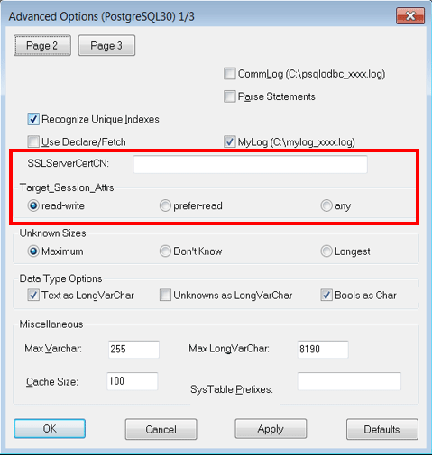

Set the following information in the connection string or data source.
Parameter | Explanation |
|---|---|
Servername | Specify IP address 1 and IP address 2, or the host name, using a comma as the delimiter. Based on ODBC rules, it is recommended to enclose the whole string containing comma delimiters with {}. Format: {host1,host2} |
Port | Specify the connection destination port numbers, using a comma as the delimiter. Format: {port1,port2} Specify the port number corresponding to the IP address or host specified for the nth Servername as the nth Port. The port number can be omitted. If omitted, the default is 27500. If n server names are specified, and m ports are specified then there will be error reported. The only exceptions are where m=n or m=1. In case only one port is specified, then the same is applied for all the hosts. |
target_session_attrs | Specify the selection sequence of the servers to which the application will connect. |
SSLMode | Specify this to encrypt communications. By default, this is disabled. The setting values for SSLMode are as follows: disable: Connect without SSL allow: Connect without SSL, and if it fails, connect with SSL prefer: Connect with SSL, and if it fails, connect without SSL require: Connect always with SSL verify-ca: Connect with SSL, using a certificate issued by a trusted CA *1 verify-full: Connect with SSL, using a certificate issued by a trusted CA to verify if the server host name matches the certificate *1 |
SSLServerCertCN | This parameter is enabled only to perform SSL authentication (SSLMode=verify-full). Specify the server certificate CN. If this is omitted, the value will be null, and the server certificate CN will be authenticated using the host name specified in Servername. |
*1: If specifying either "verify-ca" or "verify-full", use the system environment variable PGSSLROOTCERT of your operating system to specify the CA certificate file as shown below.
Example)
Variable name: PGSSLROOTCERT
Variable value: cACertificateFile
Specify the following connection string:
...;Servername={host1,host2};Port={port1,port2};[target_session_attrs={read-write | prefer-read | any}];[ SSLMode=verify-full;SSLServerCertCN=targetServerCertificateCN]...When using IPV6, specify the host in the "host" format.
[Example]
Servername={2001:Db8::1234,192.168.1.1};Port={27500,27500};Specify the properties of the data source in the following format:
Servername={host1,host2}Port={port1,port2}target_session_attrs={read-write | prefer-read | any }SSLMode=verify-full SSLServerCertCN=targetServerCertificateCNWhen using IPV6, specify the host in the "host" format.
[Example]
Servername={2001:Db8::1234,192.168.1.1}Using the ODBC Data Source Administrator, specify the items within the red border below:

Note
If using the connection parameter login_timeout, this value is applied for connections to each of the specified hosts. If both multiplexed database servers have failed, the connection will time out when a time equal to double the login_timeout value elapses.